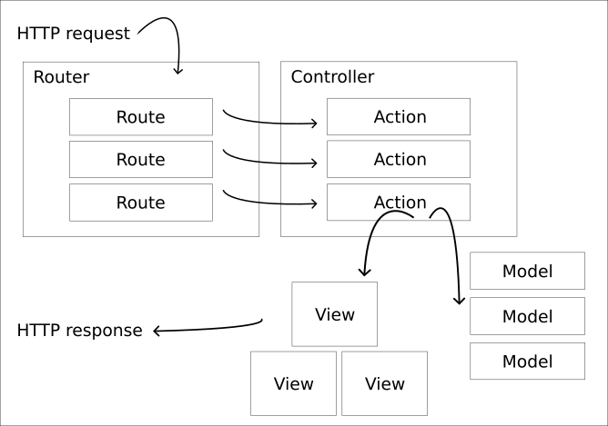

<!doctype html>
<html class="theme-5">
<meta charset="utf-8" />
<link href="../html-slideshow.bundle.min.css" rel="stylesheet" />
<link href="../style.css" rel="stylesheet" />
<script src="https://dbwebb.se/cdn/js/html-slideshow_v1.1.0.bundle.min.js"></script>

<title>MVC</title>

<script data-role="slide" type="text/html" data-markdown class="titlepage center">
# Model View Controller
## MVC design pattern with Express
### Mikael Roos
</script>


<script data-role="slide" type="text/html" data-markdown>
# Agenda

* MVC
* MVC in Express
    * Routes to Controller
    * Controller to Model
    * Controller to View
* Template engine EJS

</script>


<script data-role="slide" type="text/html" data-markdown class="titlepage center">
# Model View Controller (MVC)
</script>


<script data-role="slide" type="text/html" data-markdown>
# MVC 

* Architectural design pattern
* Commonly used structure to solve an application
* Architecture for the web application
* Also used in various GUI applications
* The exact implementation vaies between domains

</script>


<script data-role="slide" type="text/html" data-markdown>
# MVC...

* Divide competence to code parts
* Controller
    * Glue between GUI and backend
* Model
    * Backend
* View
    * Frontend

</script>


<script data-role="slide" type="text/html" data-markdown>
# The parts 

* (Request)
* (Router)
* [C]ontroller
* [M]odel
* [V]iew
* (Response)

</script>

<script data-role="slide" type="text/html" data-markdown class="center">
# MVC parts

<figure>

<figcaption>A representation of the MVC architectural pattern.</figcaption>
</figure>

</script>


<script data-role="slide" type="text/html" data-markdown>
# Request 

* The HTTP request is received by the framework
* Collecting details as the url, querystring, headers, body, cookie
* Assemble all into the request object `req`
* Prepare a response object `res`

</script>


<script data-role="slide" type="text/html" data-markdown>
# Router 

* The router contains a set of routes
* Each route has one (or more) associated callback
* Router map the incoming request method and url to a route
* Call the route handler callback with the `req` and `res` objects

</script>


<script data-role="slide" type="text/html" data-markdown>
# Controller 

* A controller is divided into actions
    * Implement as a class/module with methods
* Gets the `req` and `res` objects
* Talks to the models
* Prepares a `data` object
* Sends the `data` object to the view to be rendered
* The "glue" of the application

> "Thin and skinny controllers"

</script>


<script data-role="slide" type="text/html" data-markdown>
# Model 

* Move controller code into its own modules
* These modules are the application/business "models"
* Could be a database model
* Could connect to other services or datasources or just plain application code

> "Fat models"

</script>


<script data-role="slide" type="text/html" data-markdown>
# View 

* Get the `data` object from the controller
* Render the variables onto the HTML page
* Use a template language 
* Dynamically render the HTML page

> "Dumb views"

</script>


<script data-role="slide" type="text/html" data-markdown>
# Response 

* Send back the response using the `res` object
* As a web page `res.render('template', data)`
* As json `res.json()`
* As plain text/html `res.send()`

</script>


<script data-role="slide" type="text/html" data-markdown class="titlepage center">
# Install and setup
## Express using the MVC structure
</script>


<script data-role="slide" type="text/html" data-markdown>
# Install 

```
npm init -y
npm install express ejs morgan --save
npm install nodemon --save-dev
```

</script>


<script data-role="slide" type="text/html" data-markdown>
# The app

* `app.mjs`

```
import app from './src/express.mjs'

app()
```

</script>


<script data-role="slide" type="text/html" data-markdown>
# The server

* `src/express.mjs`

```
import express from 'express'
import logger from 'morgan'

const app = express()

app.set('view engine', 'ejs')

app.use(logger('dev'))
app.use(express.static('public'))

app.get('/', (req, res) => { res.send('Hello World!') })

export default (port = 3000) => {
  app.listen(port, () => { console.log(`Listening at port ${port}`) })
}
```

</script>


<script data-role="slide" type="text/html" data-markdown>
# Start

```
npx nodemon app.mjs

Listening at port 3000
GET / 200 4.360 ms - 12
```

```
$ curl localhost:3000/
Hello World!
```

</script>


<script data-role="slide" type="text/html" data-markdown class="titlepage center">
# Controller
## Routes with a controller
</script>


<script data-role="slide" type="text/html" data-markdown>
# Routes 

* `src/route/user_route.mjs`
* Define a module with all the routes
* Call controller methods instead of implementing the callback directly
* Provides a good overview on how the routes maps to controller actions

</script>


<script data-role="slide" type="text/html" data-markdown>
# Routes 

* `src/route/user_route.mjs`

```
import express from 'express'
import controller from '../controller/user_controller.mjs'

const router = express.Router()
export default router

router.get('/', controller.list)
router.post('/add', controller.add)
router.post('/delete/:id', controller.delete)
router.post('/update/:id/:nick/:name', controller.update)
```

</script>


<script data-role="slide" type="text/html" data-markdown>
# Mounting routes 

* `src/express.mjs`
* You can mount the routes on top of a route point in the server

```
import userRoute from './route/user_route.mjs'

app.use('/user', userRoute)
```

</script>


<script data-role="slide" type="text/html" data-markdown>
# Controller 

* `src/controller/user_controller.mjs`
* Create a module for each controller
* Export the public controller actions
* Hide the helper methods and any variables

</script>


<script data-role="slide" type="text/html" data-markdown>
# Controller...

* `src/controller/user_controller.mjs`

```
const controller = {}
export default controller

const users = []
let id = 1

controller.list = (req, res) => {}
controller.add = (req, res) => {}
controller.delete = (req, res) => {}
controller.update = (req, res) => {}
```

</script>


<script data-role="slide" type="text/html" data-markdown class="titlepage center">
# Models
</script>


<script data-role="slide" type="text/html" data-markdown>
# Models 

> "Thin controllers and fat models"

* Move code to models
* A "Model" can be any section of code that can be moved from the controller to its own module
* Its common to think of databases as a "model", but it can be any other business/application model
* For example `src/models/users.mjs`

</script>


<script data-role="slide" type="text/html" data-markdown class="titlepage center">
# Views
## Template engine EJS
</script>


<script data-role="slide" type="text/html" data-markdown>
# EJS 

* Embedded JavaScript templating
* Template engine using JavaScript
* Render data onto a HTML template
* Create a layout for the pages
* Security by escaping the output

<p class="footnote">https://ejs.co/</p>

</script>


<script data-role="slide" type="text/html" data-markdown>
# View and data 

* First the controller, preparing the `data`

```
const users = []

controller.list = (req, res) => {
  console.log('# List all users')
  res.render('read', { users })
}
```

</script>


<script data-role="slide" type="text/html" data-markdown>
# View and data...

* Then the view `views/read.ejs`, renders the data
* If it exists...

```
<h1>List users</h1>

<% if (users.length == 0) { %>
    <p>No users exists</p>
<% } else { %>
    <li></li>
<% } %>
```

</script>


<script data-role="slide" type="text/html" data-markdown>
# View and data...

* Render the content of the array as a list ul/li

```
<h1>List users</h1>

<li>
<% for (let i = 0; i < users.length; i++) { %>
    <li><%= `${users[i].name} (${users[i].nick})` %></li>
<% } %>
</li>
```

</script>


<script data-role="slide" type="text/html" data-markdown>
# View layout

* Add header and footer to the page

```
<%- include('header') -%>

<h1>List users</h1>

<%- include('footer') -%>
```

</script>


<script data-role="slide" type="text/html" data-markdown>
# Debug output

* What does the variable contain?

```
<h2>Debug</h2>
<%- JSON.stringify(users, null, 2) %>
```

</script>


<script data-role="slide" type="text/html" data-markdown>
# EJS tags

* `<%` 'Scriptlet' tag, for control-flow, no output
* `<%=` Outputs the value into the template (HTML escaped)
* `<%-` Outputs the unescaped value into the template
* `<%#` Comment tag, no execution, no output
* `%>` Plain ending tag

</script>


<script data-role="slide" data-markdown type="text/html">
# MVC

* Model - objects for the application
    * Fat models
* Controller - connect the model with the GUI/framework
    * Thin and skinny controllers
* View - present the results to the GUI/user
    * Dumb views
    * The view should not talk to models or controllers

</script>


<script data-role="slide" data-markdown type="text/html">
# Directory structure

```
app.mjs  

src                        
├── controller             
│   └── user_controller.mjs
├── express.mjs
├── model           
│   └── user.mjs    
└── route                  
    └── user_route.mjs     

views/         
├── footer.ejs 
├── header.ejs 
└── read.ejs   
```

</script>


<script data-role="slide" type="text/html" data-markdown>
# Summary

* Model View Controller (MVC)
* Request
* Route
* Controller
* Model
* View
* Response
* View engine EJS

</script>


<script data-role="slide" type="text/html" data-markdown class="titlepage center">
# The end
</script>


<script data-role="slide" type="text/html" data-markdown>
</script>

</html>
